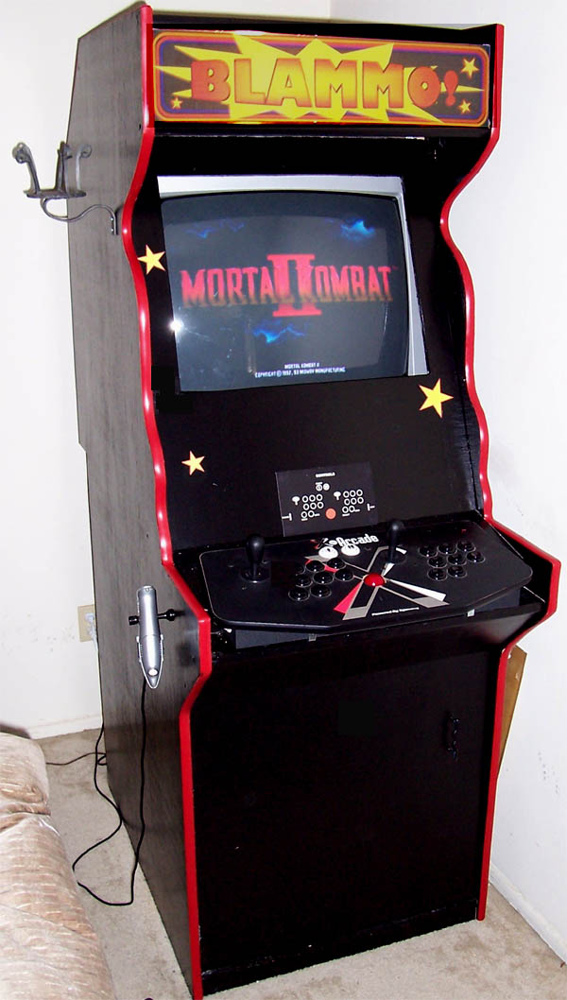

Welcome to Blammo!This site is about the "Blammo!" arcade machine I built during the first half of 2005. I made this site to show people that building your own arcade machine is neither very complicated nor very expensive. Take a look around to see how I did things. |